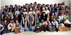

SpearheadNews.com
Super News
2003-2004

Auditions
Events
Rehearsal Schedules
Interviews
Photos
Reviews
More Fun Stuff!
The
Super Handbook
Tips, Tricks, and FAQs
San
Francisco Opera
Links
Classifieds
Contacts
Archives
Members Only
Spearheadnews.com is not officially affiliated with any
performing arts organization.
All photographs remain the property of their copyright holders.
©2003 SpearheadNews
All Rights Reserved
Khovanschina
November 1990
During the late 80s and early 90s, photographer Dottie Dean, then part
of the Women’s Chorus, would take group photos of the Supers. It
was a remarkable logistical achievement to gather 64 Supers in costume
in the Ballet Studio during an intermission -- but here they are, neatly
divided into subgroups.
The 1990 revival of Khovanschina was on an epic Russian scale
and starred powerhouse singers Nicolai Ghiaurov in his last (to date)
appearance at SFO and Dolora Zajick at the beginning of her career.
Apart from the usual popolo and guards it included three lovely Super
Persian Slaves from the famous ballet sequence (bottom row center), a
fearsome executioner (third row center) and a mystical Cleric (second
row center). The
red bearded Cossack at lower right was one-man bake sale Keith Kamrath,
who is fondly remembered for the truckloads of cakes which he would deliver
to the downstairs breakroom at every performance. He drove for Just Desserts
and the treates were damaged items that were not saleable. Keith was another
Super loss to AIDS a few years after this photo was taken.
It’s hard to tell who everyone is but in there somewhere are (among
many others) Chris Patnoe, Joan Imbeau, Dottie Brown, Tom Carlisle, Joe
Kelley, Karen Goodwyn, Dick Pallowick and Renee DeJarnatt.
(Click on the photo to see a larger image)